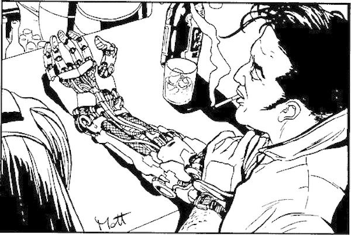
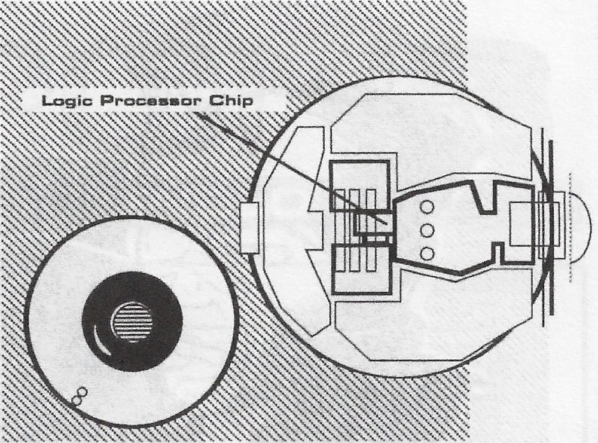

Brazos cybernéticos con múltiples funciones (que se vender por separado).
Como:
Compartimiento secreto.
Funda para ocultar un arma.
Dedos con varias herramientas
Lanzagranadas 40mm portátil
¡Perfecto para todo mercenario que busca problemas!

Cybervisión
¿Quieres poder visualizar todo el espectro de luz a voluntad propia?
¿Ver detalles que nadie ve?
¿Tener vista telescópica?
Los implantes oculares son tu mejor opción.
Visión UV
Módulo de visión mejorada
Conexión directa con tu arma de fuego
Algo necesario para todo investigador privado.

Cyberpiernas
¿No sería genial tener más agarre al correr o directamente correr más rápido?
La respuesta: Cyberpiernas.
Las cuales pueden venir con:
Patines
Anclas
Articulaciones mejoradas
¡Escapa de cualquier apuro a voluntad con mejoras en tus piernas!